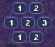
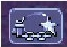

Command turrets are used much like sensors, except they can command any attacking unit, not just artillery. They are limited to having 6 non-artillery attacking units assigned to them at first, but this limit rises by 2 each time the commander gains a rank, which happens relatively quickly.
Command turrets provide an  accuracy, armor, and movement speed bonus
to all units assigned to them.
accuracy, armor, and movement speed bonus
to all units assigned to them.

The Commanders panel. Note the similarity to the Unit Orders panel.
To attach a unit to a Commander, select a unit, then left-click the Commander you want to attach the unit to. A symbol will appear next to the unit to signify it is attached.
Be warned, however; Commanders have a limit to the amount of direct-fire units (eg machineguns) which is affected by their own experience level. Levels are earned by the
Commander reaching 2 kills, 4, 8, 16, 32, 64 and so on. Each experience level allows the Commander 2 more direct-fire units. However, a Commander can have as many indirect-fire units as it wants.
To detach a unit from a Commander, select the unit you want to detach, hold the Control key, and give the unit a new order (eg. move).
You can designate a target by selecting a Commander and right-clicking a unit. This allows any attached units to have greater accuracy when firing on a targeted unit.
A Commander Unit Command Centre is similar to a Unit Command Centre, but there are extra buttons.

The Commander Factory assignment buttons
You can assign a factory to a Commander. This makes a factory manufacture units and automatically assign them to the Commander’s group. To do so, bring up the Commanders menu by left-clicking the Commander and opening the Commanders menu, or right click the Commander, and click the factory NUMBER at the bottom of the Command Console.
You can find a factory number by looking at the number on the factory in the Manufacture Fast Find bar. There are three rows of these numbers — the top is normal Factories, middle; Cyborg factories, bottom; VTOL factories.
A unit that retreats from the battle to go to a repair facility, will stay connected to its Commander group. When it is done repairing, it will return to the Commander.

The indirect fire support icon
You can assign all the indirect fire pits and emplacements to a Commander’s designated target, also known as "fire support". To do so, simply select a Commander, open the Commanders menu, and select the above icon. To cancel it, select the same button, or assign the fire support to another commander.